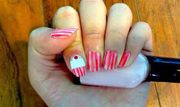
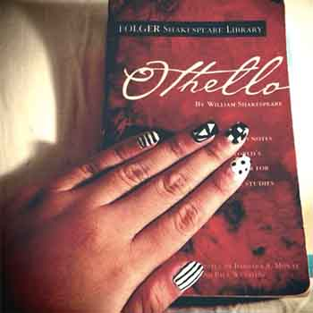
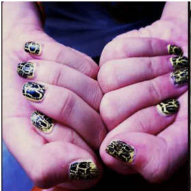
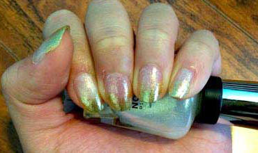

Welcome to Nail Art Gallery!
♣ Cupcake Nail Art
Cute and lovely.
Cupcakes are girl best friend right? Wouldn't it be cute to have your closet friends on your nails? You can either draw a cupcake on every of your nail or just one nail for each hand like this! This nail art is really cute and easy to do.
Click on the image for turorial!

♣ Shakespeare Nail Art
Cute and Classic.
I came up with the idea of this nail art when I was reading world's famous classic play by Shakespeare. I thought about something that looked cute, but in black and white. I guarantee you that this style of nail art will be worth your time that you spend doing it!

♣ The Rocker Nail Art
Easy and Chick.
You simply need only yellow nail polish and black cracked nail polish to do this style of nail art. It's so simple and easy to do too. Apply the yellow nail polish first, wait until it completely dry then apply the black cracked nail polish on top.

♣ The Marble Nail Art
Fascinating and artistic.
This nail art is one of the coolest styles I've ever done! You can design the pattern after you drop the nail polish on the surface of the water the use the toothpick to crate your own art!

♣ The Prom Queen Nail Art
Classy and glamorous.
This idea of nail arts first entered my mind when I went to prom last year. I was thinking for something basic, but classy. With the sparking and shiny pearl colored base and the glamorous gold colors on the tips, this style of nail arts become the another one of my all time favorite style. Click on the image for turorial!
Click on the image for turorial!

♣ Polka Dotted Nail Art
Cute, simple and easy.
You just simply need to use the dotting tool to create these cute dots on your nails. Big dots, medium dots, small dots? Size them yourself! Click on the image for turorial!
Click on the image for turorial!